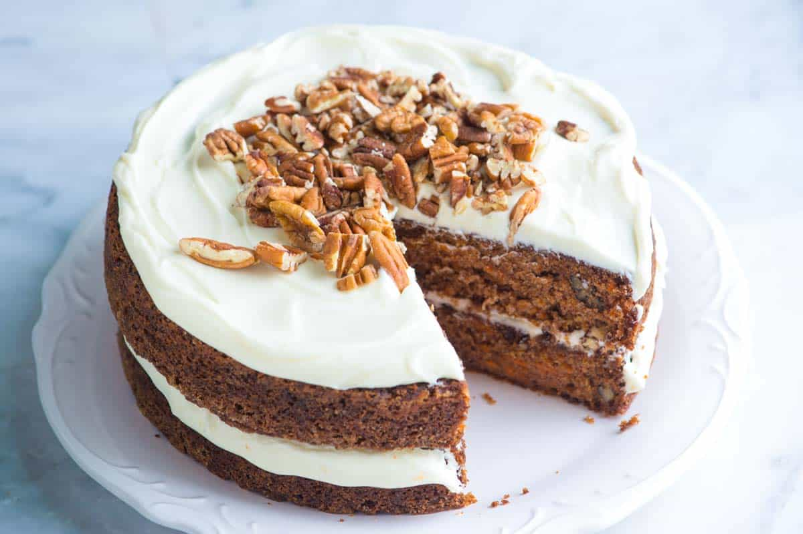

Carrot cake

Description
Juicy carrot cake for a 18 cm diameter cake pan.
Ingredients
- 3 Eggs (large)
- 180 g Flour
- 180 ml Sunflower oil
- 180 g Brown sugar
- 300 g Carrots
- 75g Nuts
- 2 tsp Baking powder
- 1 1/3 tsp Cinnamon powder
- 1 tsp Ginger powder
- 1/3 tsp Nutmeg
- Pinch of salt
Steps
- In a large bowl, mix in the sugar with the eggs.
- Next, add the oil to the mix.
- Peel and grate the carrots and add them to the mix.
- In a separate bowl, mix the dry ingredients (flour, baking powder and spices) and then add them to the previous mix.
- Finally, add the nuts roughly chopped.
- Cook in the over for approximately 60 minutes at 180ºC.
- Take out of the over and let it rest in the cake pan for 10 minutes and then remove and let it chill in a rack.